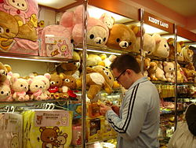

 The factual story for Rilakkuma's being is that he mysteriously appears in the female office lady Kaoru's apartment one day. He is a soft toy bear who has apparently decided to take up residence there. On his back is a zipper which when opened reveals a light blue polka dot patterned material. The reason for the zipper on his back is unknown.
He was first seen in a series of picture books called Rilakkuma Seikatsu produced by San-X but since has become equally popular as a soft-toy character. In the picture books, he is often seen dressed up in a variety of costumes such as a kappa costume. In addition, it is implied that even in his usual appearance, his entire lower body is a costume, which he will often replace when it gets old or dirty (Rilakkuma is frequently seen sitting around waiting for suits that look exactly like him to dry on the clothes line). However, it is not clear whether his head is also part of his costume.
His favorite foods are dango, pancakes, omurice, custard pudding, and grapes. True to his name, he enjoys relaxing and his favorite things include sleeping, lying around, watching television, listening to music and soaking in hot springs. He loves using Kaoru's yellow bean bag pillow, although there has been some controversy whether or not the yellow bean bag pillow is in fact Kiiroitori.